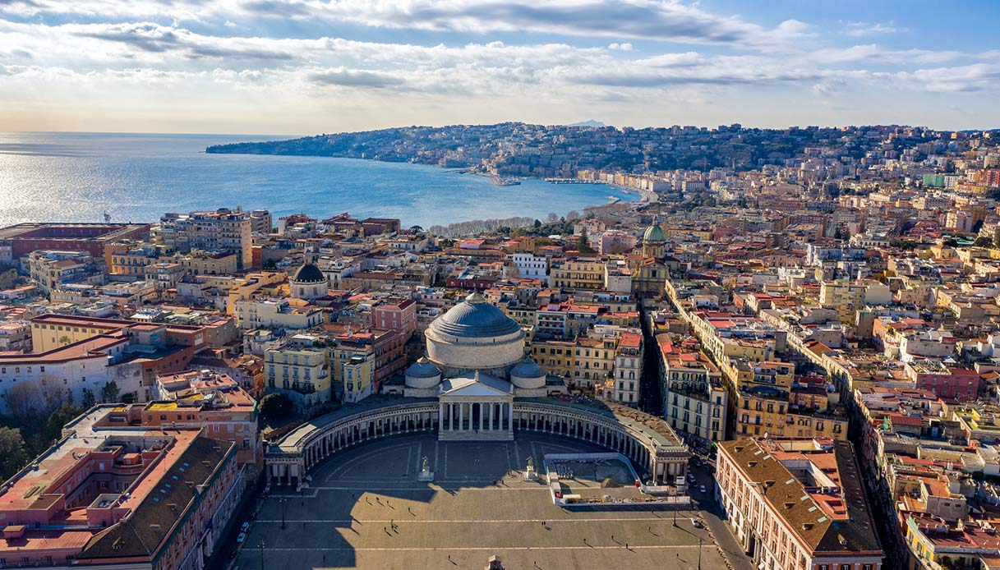

Non posso dire di aver mai amato una donna, ma se so cosa è l'amore,
è grazie a questa città.
Un'amore sbocciato solo nel tempo, anzi, da piccolo non la sopportavo proprio,
non vedevo l'ora di fuggire da essa, e forse anche per questo, ho vissuto
tanti anni della mia vita fuori Napoli.
Tutto probabilmente è iniziato durante la mia esperienza a Malta, nell'inverno del 2013:
Di giorno in giorno, mi rendevo conto di quanto mi mancasse quella mia cultura, quel modo di fare
così unico, così iconico, che, nel bene e nel male, ci ha resi quello che siamo, napoletani.
Ed è così che man mano, ascoltavo sempre più la musica popolare napoletana,
rivedevo i film di Troisi, i spettacoli teatrali di Salemme e così via.

Negl'anni a seguire, ho sempre mostrato di più questa mia napoletanità, soprattutto quando ero fuori Napoli,
perchè l'ho sempre ritenuta una delle parti migliori di me.
Amo la storia di questi vicoli, che racchiudono tanti misteri e leggende che è impossibile quantificare.
Libero Bovio, poeta napoletano di inizio '900 disse Tutto è azzurro a Napoli. Anche la malinconia è azzurra.